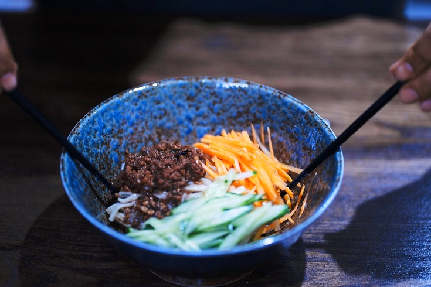
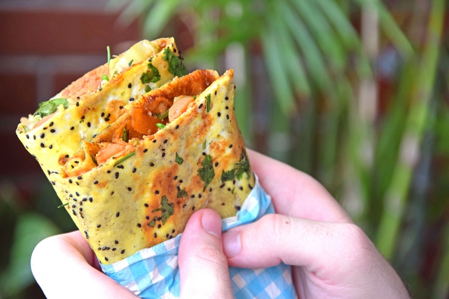
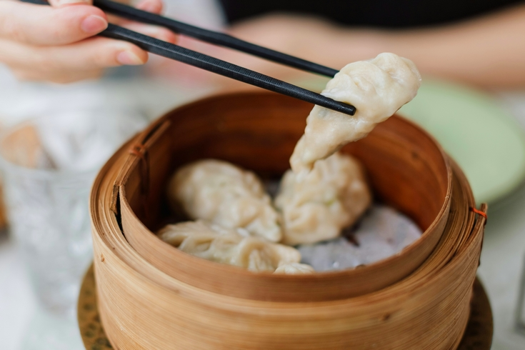

Le Shandong se situe à l’extrémité orientale de la grande plaine de Chine du Nord et est traversé par le fleuve Jaune.
La région bénéficie d’un climat tempéré de type continental humide. Les étés y sont généralement chauds et humides et les hivers y sont froids et secs.
En raison de son climat et de précipitations relativement faibles, le Shandong ne cultive pas de riz, à la différence des provinces plus au Sud. Cependant, il se distingue comme l’une des principales régions productrices de blé, d’ail et de sel en Chine, des ingrédients qui jouent un rôle central dans sa tradition culinaire.
La région du Shandong correspond à l’ancien État de Lu (d'où le nom Lu cai), berceau de Confucius, et son histoire culinaire remonte à la période des Printemps et Automnes (770-481 av. J.-C.). Toutefois, c’est sous la dynastie Yuan (1271-1368), lorsque les Mongols prirent le contrôle de la Chine, que sa gastronomie connut un essor considérable.
Grâce à sa proximité géographique et à son prestige culturel, la cuisine du Shandong exerça une influence prépondérante sur celle de Beijing, la capitale impériale. Son empreinte se retrouve également dans la cuisine de Tianjin, grand port du nord de la Chine, ainsi que dans l’ensemble de la région du Dongbei (nord-est de la Chine), où elle a contribué à façonner un patrimoine culinaire robuste, adapté aux climats rigoureux de ces territoires. Certains considèrent même les cuisines du Dongbei, de Pékin et de Tianjin comme branches de la cuisine du Shandong. On parlerait alors de « grande famille culinaire du Nord ».
On distingue trois grands styles majeurs:
La cuisine du Shandong se distingue par l'abondance d'assaisonnements tels que le vinaigre, la sauce soja, l'ail, le sel, les oignons et les cébettes, créant des saveurs intenses et profondes.
Les saveurs prédominantes dans la cuisine du Shandong sont umami, salées, acides et sucrées.
Il existe d'importantes différences agricoles et alimentaires entre le Nord et le Sud de la Chine, liées à des conditions géographiques, climatiques et culturelles variées.
Dans le Nord du pays, le blé est largement prédominant contrairement au Sud, où le riz règne en maître. Les baos et les nouilles occupent ici une place centrale dans l'alimentation quotidienne.
Les viandes les plus couramment consommées dans cette région sont le bœuf, l'agneau et le mouton. Cette préférence est en grande partie due à la proximité avec les immenses pâturages de la Mongolie intérieure, où l'élevage extensif de ces animaux est une tradition séculaire. Les vastes plaines offrent un terrain idéal pour l'élevage de ces espèces, qui constituent des sources importantes de protéines dans l'alimentation nordique.
Les chefs du Shandong sont célèbres pour leur maîtrise d'une multitude de techniques culinaires sophistiquées.
La cuisine du Shandong se distingue par plus de 30 méthodes de cuisson, parmi lesquelles le bao, qui consiste à frire à très haute température dans un wok, ou le pa, où une couche de farine est appliquée sur la viande avant cuisson, lui conférant ainsi une texture croustillante.
Le zhajiangmian est un savoureux plat de nouilles épaisses nappées de zhajiang, une sauce riche à base de porc haché et de pâte de soja fermentée.
Originaire du Shandong, il s’est imposé comme une spécialité emblématique de Beijing et s’est répandu à travers toute la Chine, donnant naissance à de nombreuses variantes régionales.
Son succès dépasse les frontières, inspirant des déclinaisons populaires en Corée du Sud sous le nom de jajangmyeon et au Japon sous celui de jajamen.

Les jianbing sont des crêpes chinoises garnies d'œufs et de sauces, cuites rapidement sur une grande plaque chauffante, à la manière des crêpes bretonnes. Elles se parent de diverses garnitures, allant des pickles au jambon, en passant par la coriandre et les cébettes. Une fois garnies, elles sont pliées plusieurs fois avant d’être servies.
Son histoire remonte à plus de 2 000 ans, à l’époque des Trois Royaumes (220-280 apr. J.-C.), dans la province du Shandong. Selon la légende, le chancelier Zhuge Liang fut confronté à un sérieux problème : ses soldats, ayant perdu leurs woks, ne pouvaient plus cuisiner. Il ordonna alors à ses cuisiniers de mélanger de la farine de blé avec de l’eau pour obtenir une pâte, puis de l’étaler sur des boucliers ou des plaques de cuivre chauffées à la flamme. Ce mets improvisé redonna du moral aux troupes et contribua à leur victoire. Depuis, le jianbing s’est transmis de génération en génération dans le Shandong, avant de se répandre à travers toute la Chine.
Très populaire dans les rues de Tianjin, il s'agit d'un des incontournables du petit déjeuner « street food » en Chine.

Les jiaozi sont des raviolis chinois, généralement faits à base de pâte fine farcie avec des ingrédients très variés. La pâte est façonnée en petits cercles, puis fermée autour de la garniture, formant une demi-lune. Ils peuvent être cuits à la vapeur, frits ou bouillis.
Ils sont généralement servis avec une sauce à base de vinaigre noir et de sauce soja, parfois agrémentée de piment.
Ces raviolis ont une grande importance culturelle en Chine. Ils sont généralement associés aux fêtes familiales comme au nouvel an chinois et sont un symbole de richesse et de chance, en raison de leur forme qui rappelle des lingots d'or utilisés dans l'histoire impériale chinoise.
Il est important de ne pas les confondre avec les wonton provenant du Guangdong, qui ont une pâte moins épaisse, une forme différente et souvent consommés en soupe.
Les gyoza sont une version japonaise des jiaozi, inspirés des recettes rapportées par les soldats japonais revenant de Mandchourie après la Seconde Guerre mondiale.
